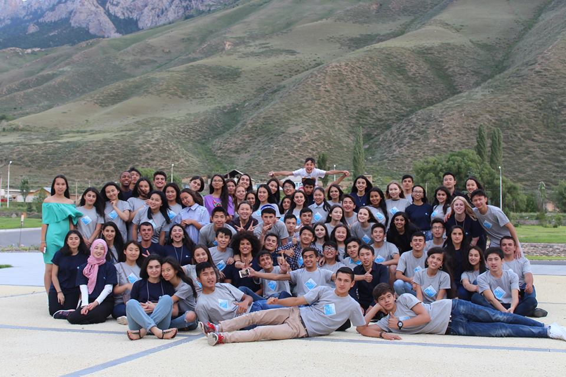
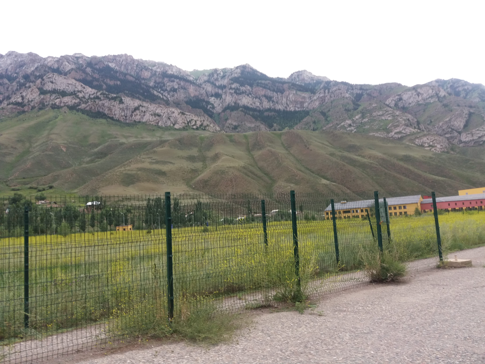
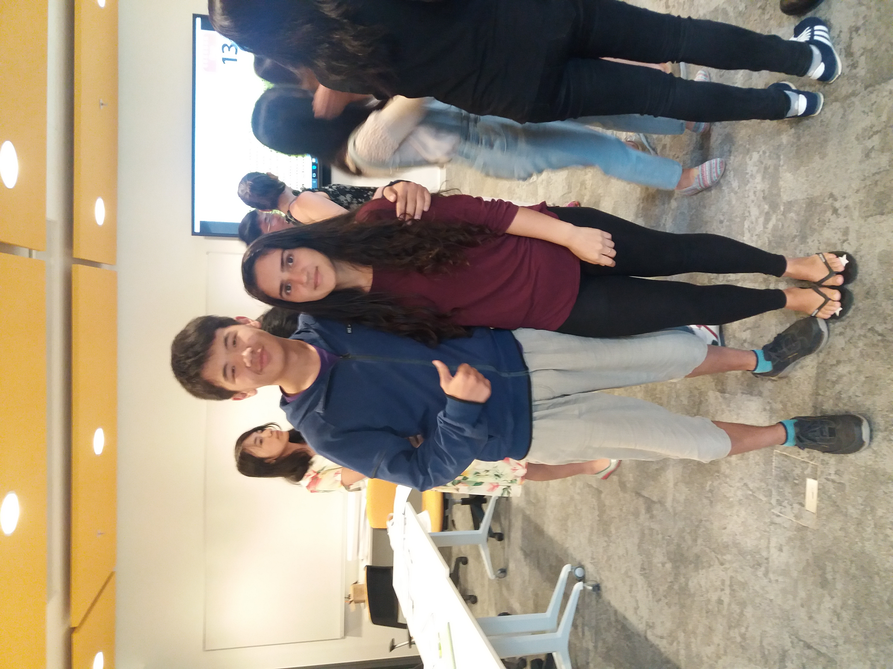
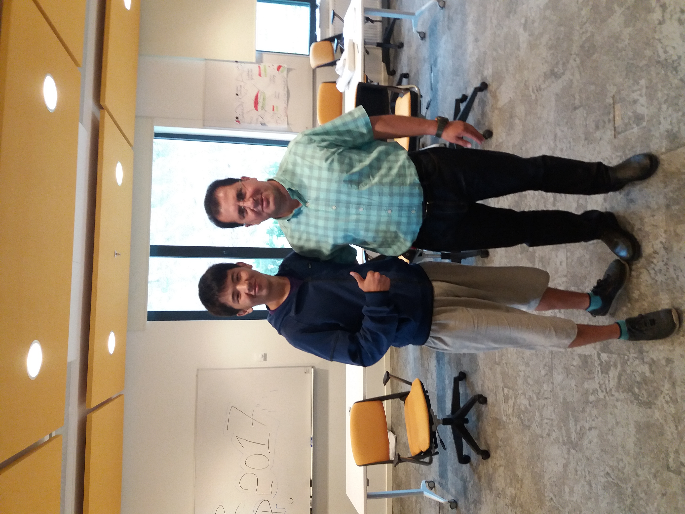

It’s been a week since I came home. Still missing these best days of my life. These days were days where I got bored, however in the end I had feelings I don’t want to leave.
Anyways I had to. I’m home. When I came, I immediately started my internship at Unique Technologies LLC. (UT)…I got a new project and a partner. I was sick for a while. Probably, you have read my previous blogs about UCA Summer Camp and Love at UCA. I got a lot of new things which can’t be forgotten. I was missing UCA a lot. And I think that’s because I had depression.
WORK.
After amazing two weeks, I got rested pretty good. Right after the day I came home, I started my work in the office. What I realized was that I couldn’t concentrate on code. Even I didn’t want to write a code. My appetite started worsen, I didn’t want to meet my friends and even talk to everyone. I shared it with my colleague, he said that I’m depressed. He also said that the reason I don’t want to write a code or solve problems is because of a long holiday. He thinks that I didn’t practice, that’s why I became lazy.
Then I met our lovely counselor Davis from UCA. He said he also had depression and what he was doing was doing sports. I started running in the crack of dawn. I was waking up early in the morning and running for at least 5km a day (of course I didn’t start 5km immediately, I woke up first. The next day I walked, the next day I ran a bit. And the other days I was running for long distances). The reason I was doing it (and still doing) was to beat depression and forget about HER. She was always in my mind. I got distracted and I think that’s why I’m not working efficiently.

Prof. Hamid
I like how Prof. Hamid explains.Strange things was happening with me. I had headache every day after work, I didn’t want to eat even I didn’t eat for a long time. But work is work, my colleagues hate when someone is rude with us just because of a woman who left from him. So I was doing my best. I didn’t want them to know except Dasya (my friend from high school, now working with me). Everything/everyone was annoying me. I just wanted to stay alone.
I always thought that classrooms are for sleeping
I found two solutions for this, running and talking to friends. Like I said, running helped me to forgot about everything. As for friends, I had different conversation with them. My friend. He was ready for everything to help. Thanks a lot to him. I was just saying what am I feeling. My brother, he is my wall. He is the one who understands me and gives a wise life advices. Another my friend. I have been enjoying talking to her. She supports me everyday and it helps to feel better. However, I’m still struggling with it. And I’m writing this by the suggestion of my brother.
In my point, we need to be more positive and think positively. I think these problems I have written above are pieces of cake in a real life. Just because of someone/something we are struggling or being sad. There’s no need. Focus on what you do. And be more positive.

View from UCA campus
To go places and do things that have never been done before – that’s what living is all about.End.
I would like to thank people who were with me and for these beautiful days at UCA. You were amazing even I was strange with you.
That’s all for my blog about Summer Camp 2017. I got a huge experience. Honestly, I didn’t expect that summer camp will be like this year. That’s it for all, I just don’t know what else to write to the end of my blog about camp. I will attach some photos from the camp. Hope you enjoy!
Stay in touch
- @: islamnurdin8@gmail.com
- WhatsApp: +996778 19-03-51
 UCA summer camp.  Naryn. 
Spin your phone
With amazing Sabrina. Spin your phone
Prof. Hamid.Whatch how Davis said goodbye.